계림 산수 — 이강의 봉우리
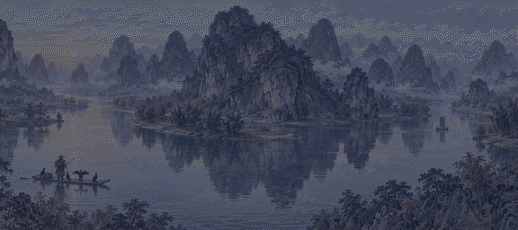
계림에서 양삭까지 이강 물줄기를 따라 석회암 봉우리 수천 개가 죽순처럼 솟아 있다. 물에 비친 봉우리와 실제 봉우리가 맞붙어 어디까지가 산이고 어디부터가 물인지 모를 지경이다. 당나라 문인 한유는 「강은 푸른 비단 띠를 두르고 산은 푸른 옥비녀를 꽂았다」고 노래했다. 어부들은 가마우지를 뗏목에 태우고 물고기를 잡는다.
GIF 열기 · guilin
계림에서 양삭까지 이강 물줄기를 따라 석회암 봉우리 수천 개가 죽순처럼 솟아 있다. 물에 비친 봉우리와 실제 봉우리가 맞붙어 어디까지가 산이고 어디부터가 물인지 모를 지경이다. 당나라 문인 한유는 「강은 푸른 비단 띠를 두르고 산은 푸른 옥비녀를 꽂았다」고 노래했다. 어부들은 가마우지를 뗏목에 태우고 물고기를 잡는다.
GIF 열기 · guilin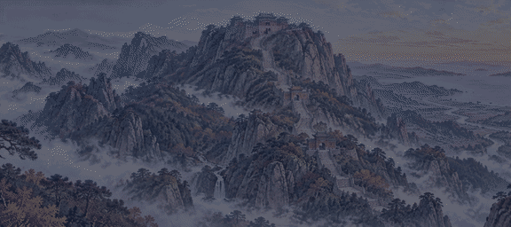
다섯 큰 산 가운데 으뜸으로 치는 동쪽의 산. 진시황과 한 무제가 꼭대기에 올라 하늘에 나라를 이룬 것을 고하는 봉선 제사를 지냈다. 산 밑에서 남천문까지 돌계단이 칠천 개 가까이 이어지고, 해 뜨는 것을 보려는 이들이 밤새 오른다. 바다 건너 조선에서도 「태산이 높다 하되 하늘 아래 뫼이로다」라고 읊었다.
GIF 열기 · taishan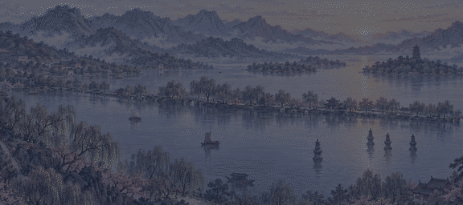
항주 성 서쪽, 세 면을 산이 두른 맑은 호수. 이 고을을 다스린 백거이와 소동파가 쌓은 두 둑이 물 위를 가로지르고, 버드나무와 복사꽃이 철마다 빛깔을 바꾼다. 「위에는 하늘나라, 아래에는 소주와 항주」라는 말이 여기서 나왔다. 저녁 절의 종소리와 달 비친 세 돌탑이 서호의 열 경치로 꼽힌다.
GIF 열기 · xihu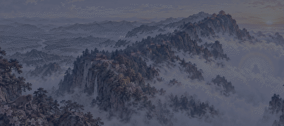
성도 남서쪽, 눈썹처럼 길게 누운 산. 보현보살이 머문 성산이라 산길마다 절이 이어진다. 구름보다 높은 금정에 서면 발아래로 구름바다가 펼쳐지고, 해를 등지면 구름 위 둥근 무지개 속에 제 그림자가 비친다 — 사람들은 이를 「부처의 빛」이라 부르며 절한다. 산속 원숭이들은 순례객의 보따리를 노린다.
GIF 열기 · emeishan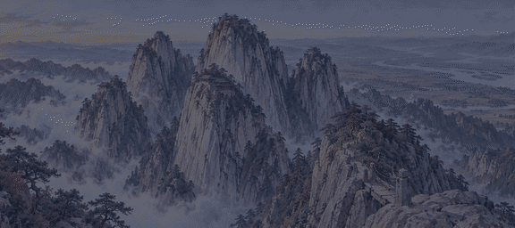
서안 동쪽, 칼로 깎은 듯한 화강암 봉우리 다섯이 연꽃잎처럼 둘러선 산. 「예로부터 화산 길은 하나뿐」이라는 말처럼, 벼랑에 박은 쇠사슬을 잡고 매달리거나 절벽에 덧댄 판자 길을 기어올라야 한다. 도사들이 바위틈에 도관을 짓고 수련하던 곳이라, 꼭대기에서는 황하와 위수가 만나는 들판이 끝없이 내려다보인다.
GIF 열기 · huashan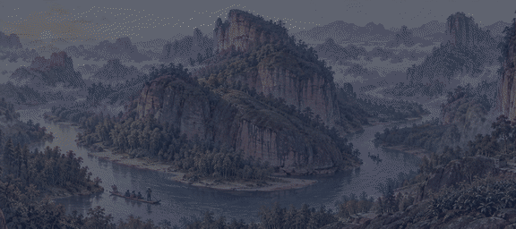
복건 북쪽, 붉은 사암 봉우리 사이로 아홉 굽이 시냇물이 휘돌아 흐른다. 대나무 뗏목을 타고 굽이를 내려가면 벼랑 높은 틈에 옛사람의 배 모양 관이 걸려 있다. 주자가 이곳에 정사를 짓고 「무이구곡가」를 지었고, 바위틈에서 자란 차나무 잎은 진한 바위 맛이 난다고 이름났다.
GIF 열기 · wuyishan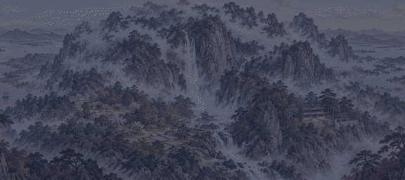
장강과 파양호 사이에 솟은 산. 안개가 잦아 「여산의 참모습을 모르는 것은 내가 이 산속에 있기 때문」이라는 소동파의 시가 남았다. 이백은 향로봉 폭포를 보고 「날아 떨어지는 물줄기 삼천 척, 은하수가 하늘에서 쏟아지는가」 하고 읊었다. 도연명이 살던 마을과 백록동 서원도 기슭에 있다.
GIF 열기 · lushan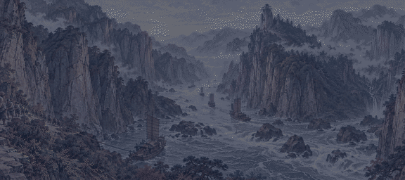
사천에서 흘러나온 장강이 산맥을 뚫고 지나는 구당·무·서릉 세 협곡. 벼랑이 하늘을 가려 한낮에도 어둑하고, 물살이 바위에 부딪혀 뒤집히는 배가 많았다. 거슬러 오르는 배는 벼랑 길에 늘어선 뱃꾼들이 대나무 밧줄로 끌어 올린다. 무협 위에는 신녀봉이 서 있어, 옛 초나라 임금이 꿈에 만난 무산의 신녀 이야기가 전한다.
GIF 열기 · sanxia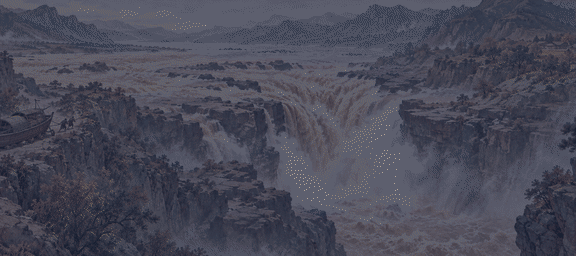
넓게 흐르던 황하가 갑자기 좁은 바위틈으로 쏟아져 들어가는 폭포. 누런 물이 주전자 주둥이로 붓듯 떨어진다 하여 「호구」라 부른다. 물보라가 연기처럼 솟고 천둥 같은 소리가 십 리 밖까지 들린다. 배는 이곳을 지날 수 없어, 뭍으로 끌어 올려 폭포를 돌아가야 했다.
GIF 열기 · hukou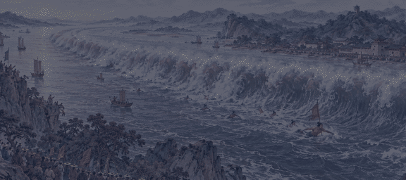
음력 팔월 보름 무렵이면 바다의 밀물이 나팔처럼 좁아지는 전당강 어귀로 거꾸로 밀려 올라온다. 은빛 물벽이 한 줄로 늘어서 천둥소리를 내며 강을 거슬러 달리니, 송나라 때부터 구경꾼이 강둑을 메웠다. 깃발을 들고 그 물살 위로 헤엄쳐 나가는 「농조아」 젊은이들의 재주가 이름났다.
GIF 열기 · qiantang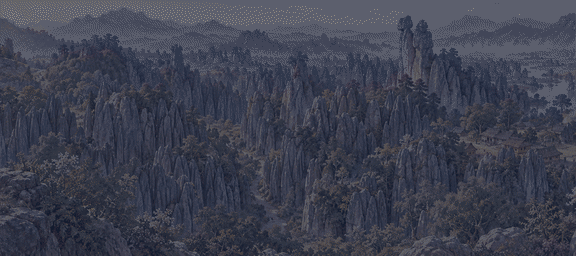
운남 동쪽, 잿빛 석회암 기둥이 빽빽이 솟아 돌로 된 숲을 이룬다. 좁은 바위 골목이 미로처럼 얽혀 길을 잃으면 반나절을 헤맨다. 이 고장 이 사람들은 바위 하나를 혼인을 빼앗긴 처녀 아시마가 굳어진 것이라 하며, 그 이야기를 긴 노래로 전한다.
GIF 열기 · shilin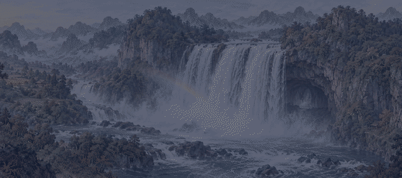
귀주 산골의 넓은 폭포. 백수하가 절벽에서 한꺼번에 떨어져 무지개가 늘 걸린다. 명나라 말 여행가 서하객이 이곳을 지나며 물보라가 구슬처럼 튀고 연기처럼 날린다고 적었다. 폭포 뒤 물발 속으로 바위 굴이 이어져, 물 커튼 뒤에서 바깥을 내다볼 수 있다.
GIF 열기 · huangguoshu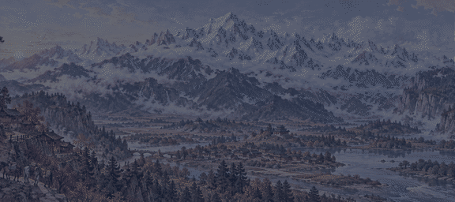
여강 북쪽, 열세 봉우리가 일 년 내내 눈을 이고 있는 산. 흰 봉우리가 구름 사이로 누운 모습이 옥으로 된 용 같다고 한다. 기슭의 나시 사람들은 이 산을 수호신으로 섬기고, 그림처럼 생긴 동파 문자로 경전을 적는다.
GIF 열기 · yulong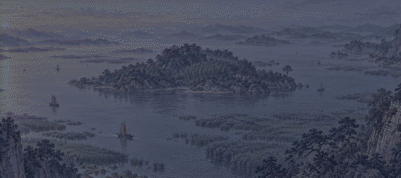
장강 남쪽의 넓은 호수. 여름이면 물이 불어 팔백 리에 이른다고 하였다. 호수 가운데 군산 섬에는 순임금의 두 왕비가 슬피 울어 대나무에 눈물 자국이 생겼다는 반죽이 자란다. 동쪽 기슭 악양루에 올라 범중엄은 「천하의 근심을 먼저 근심하고 천하의 즐거움은 나중에 즐긴다」고 썼다.
GIF 열기 · dongting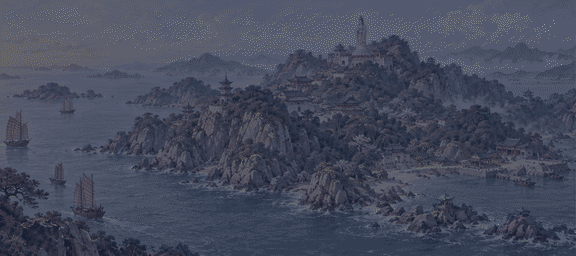
절강 앞바다 주산 군도의 작은 섬. 관음보살이 머무는 곳이라 하여 섬 전체가 절과 암자로 덮였다. 바다 건너로 모셔 가던 관음상이 이 앞바다에서 배가 꼼짝하지 않아 섬에 두었다는 「가고 싶지 않은 관음」 이야기가 전한다. 뱃사람들은 지날 때마다 향을 피워 순풍을 빈다.
GIF 열기 · putuo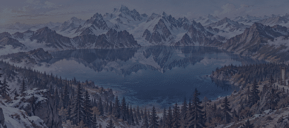
천산산맥 보그다 봉 기슭, 높은 곳에 고인 짙푸른 호수. 눈 덮인 봉우리가 물에 거꾸로 비치고 가문비나무 숲이 둘러싼다. 옛사람은 이곳을 서왕모가 주나라 목왕을 맞아 잔치를 벌인 요지라고 믿었다.
GIF 열기 · tianchi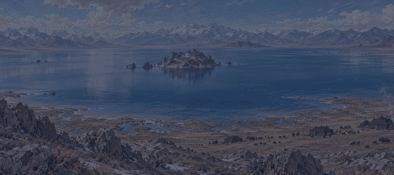
티베트 고원 북쪽 끝의 짠물 호수. 하늘보다 푸른 물이 끝없이 펼쳐져 몽골 사람은 「쿠쿠노르(푸른 호수)」라 부른다. 가운데 바위섬에는 겨울에 얼음을 건너 들어간 수행자들이 산다. 여름 호숫가에는 유목민의 검은 천막이 점점이 박힌다.
GIF 열기 · qinghaihu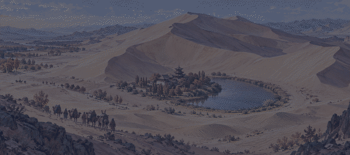
돈황 남쪽의 모래산. 바람이 불면 모래가 흘러내리며 북소리 같은 울음을 낸다 하여 「우는 모래산」이다. 그 품에 초승달 모양의 샘이 고여, 사방에서 모래가 덮쳐 와도 천 년 넘게 메워지지 않았다. 비단길 대상들이 사막을 건너기 전 마지막으로 물을 채우던 곳이다.
GIF 열기 · mingsha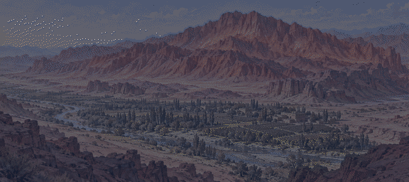
투르판 분지 북쪽의 붉은 사암 산줄기. 여름 한낮이면 산이 불꽃처럼 일렁이고 땅이 달구어져 모래에 달걀이 익는다고 한다. 당나라 승려 현장이 인도로 가며 이 앞을 지났고, 『서유기』에서는 손오공이 파초선을 빌려 불을 끄는 산이 되었다. 골짜기 사이에는 포도밭이 숨어 있다.
GIF 열기 · huoyan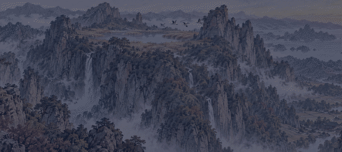
절강 남쪽 바닷가 가까운 산. 꼭대기에 갈대가 우거진 호수가 있어 가을 기러기가 내려앉는다 하여 이름이 붙었다. 깎아지른 봉우리와 폭포가 많고, 해가 지면 바위 그림자가 마주 선 부부나 낙타처럼 보이는 「밤 경치」가 이름났다. 서하객은 꼭대기의 기러기 호수를 찾으려고 여러 번 이 산을 올랐다.
GIF 열기 · yandang카일라스산 남쪽 기슭의 높은 호수. 힌두는 브라흐마가 마음으로 지은 호수라 하고, 불교도는 붓다의 어머니가 꿈에 몸을 씻은 아나바타프타 못이라 한다. 순례자들은 사흘 걸려 호수를 한 바퀴 돌고 그 물로 몸을 씻는다. 맑은 날에는 물빛이 하늘보다 푸르다.
GIF 열기 · manasarovar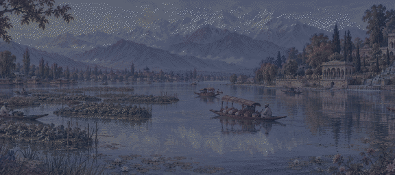
카슈미르 계곡 스리나가르 곁의 호수. 눈 덮인 산이 물에 비치고, 갈대 사이 떠다니는 밭에서 채소가 자란다. 무굴 황제 자항기르는 호숫가에 계단식 샬리마르 정원을 꾸미고 「땅 위에 낙원이 있다면 바로 여기」라 했다고 한다. 작은 배 시카라가 꽃과 과일을 싣고 오간다.
GIF 열기 · dallake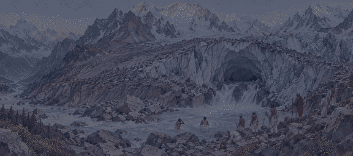
히말라야 깊은 골짜기, 갠지스 강이 처음 시작되는 빙하의 끝. 얼음 굴 입구가 소의 입처럼 생겨 「가우무크」라 부르고, 그 입에서 차가운 잿빛 물이 쏟아진다. 힌두는 하늘의 강 강가가 시바의 머리칼을 타고 이곳으로 내려왔다고 믿는다. 순례자들은 얼음물에 몸을 담그고 그 물을 병에 담아 간다.
GIF 열기 · gangotri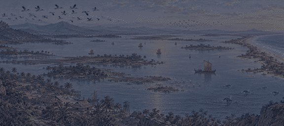
벵골만 서쪽 해안, 모래톱 하나로 바다와 갈린 넓은 짠물 호수. 옛 칼링가의 배들이 이 물목에서 자바와 수마트라로 떠났다. 겨울이면 북쪽에서 날아온 물새 떼가 하늘을 덮고, 물목 근처에서는 머리가 둥근 돌고래가 물 위로 숨을 쉰다.
GIF 열기 · chilika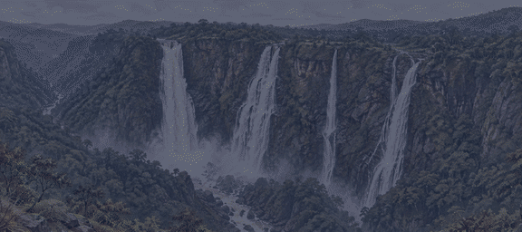
서고츠 산맥에서 샤라바티 강이 한 번에 떨어지는 높은 폭포. 우기가 되면 네 갈래 물줄기가 하나로 합쳐 골짜기를 물안개로 채운다. 강어귀의 게르소파는 포르투갈 사람들이 「후추의 여왕」이라 부른 여왕이 다스리던 땅으로, 그 후추를 사려고 배들이 드나들었다.
GIF 열기 · jogfalls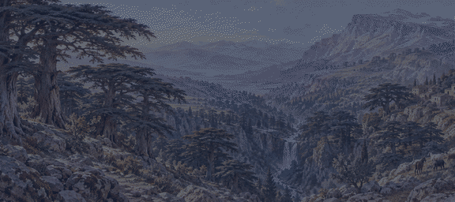
레바논 산맥 높은 골짜기에 남은 늙은 삼나무 숲. 솔로몬은 이 나무로 예루살렘 성전을 지었고, 페니키아와 이집트 사람들은 배와 관을 만들었다. 수천 년을 베어 내어 이제 몇 백 그루만 남아, 산골 마론파 사람들은 「하나님의 삼나무」라 부르며 지킨다. 가지가 층층이 넓게 퍼져 그늘이 깊다.
GIF 열기 · cedars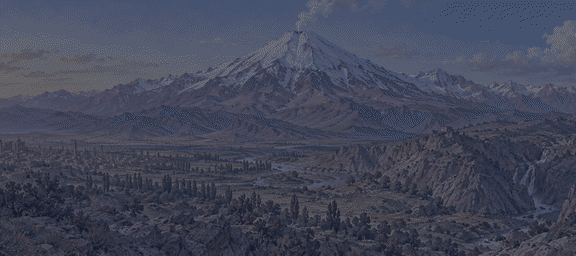
레이 북동쪽 엘부르즈 산맥 위에 홀로 솟은 흰 화산. 꼭대기 갈라진 틈에서 유황 김이 피어오른다. 『샤나메』에서는 영웅 페리둔이 어깨에 뱀이 돋은 폭군 자하크를 이 산 굴에 쇠사슬로 묶어 두었다고 노래한다. 페르시아 사람들은 이 산을 나라의 등뼈로 여긴다.
GIF 열기 · damavand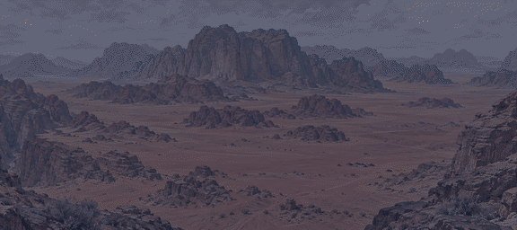
아카바 만 북동쪽, 붉은 모래 바닥 위에 사암 바위산들이 성벽처럼 솟은 골짜기. 바람이 깎은 바위 다리와 바위틈 샘물이 있어, 나바테아 사람들이 바위에 신전을 깎고 벽에 낙타와 사냥꾼을 새겼다. 베두인은 지금도 검은 털 천막을 치고 이 골짜기를 지난다.
GIF 열기 · wadirum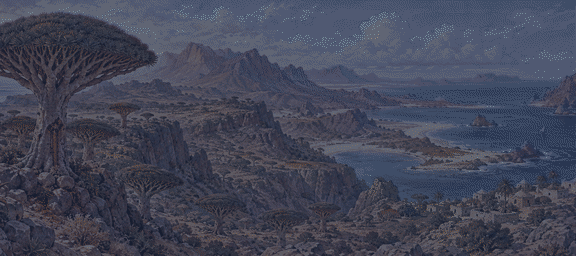
아덴 만 어귀에 떨어진 섬. 우산을 뒤집어 펼친 듯한 나무가 고원에 서 있어, 줄기를 베면 피처럼 붉은 진이 흐른다 — 이것이 물감과 약으로 쓰는 「용의 피」다. 알로에와 유향도 나고, 옛 그리스 뱃사람들은 이 섬을 「행복의 섬」이라 불렀다. 계절풍이 거세어 한철에는 배가 닿지 못한다.
GIF 열기 · socotra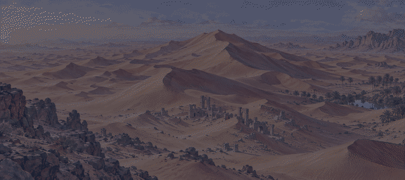
아라비아 반도 남쪽을 덮은 가장 큰 모래 바다. 산처럼 높은 모래 언덕이 끝없이 줄지어, 베두인조차 가장자리만 다닌다. 낮에는 모래가 타오르고 밤에는 물이 얼 듯 춥다. 모래 밑에 사라진 도시들이 묻혀 있다는 이야기가 전한다.
GIF 열기 · rubalkhali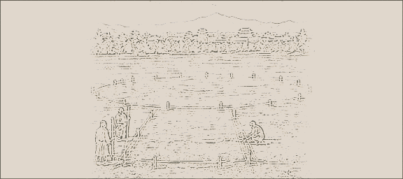
북경 성 남쪽, 명나라 영락제가 자금성과 함께 세운 하늘 제사터. 둥근 세 겹 지붕을 얹은 기년전에서 황제가 해마다 풍년을 빈다. 하늘은 둥글고 땅은 네모나다는 뜻대로 담장 북쪽은 둥글고 남쪽은 네모다. 흰 돌로 세 단을 쌓은 환구단 한가운데 서서 말하면 목소리가 크게 되울린다.
GIF 열기 · tiantan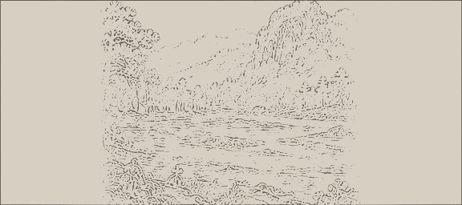
숭산 소실산 기슭, 북위 때 세운 절. 인도에서 온 달마가 뒷산 굴에서 아홉 해 동안 벽을 마주하고 앉아 선을 열었다고 한다. 당 태종을 도운 열세 명의 스님 이야기 이래 소림의 주먹과 곤봉술이 천하에 이름났고, 명나라 때는 스님 군사가 바닷가까지 나가 왜구를 쳤다. 탑림에는 이름난 스님들의 돌탑 수백 기가 숲을 이룬다.
GIF 열기 · shaolin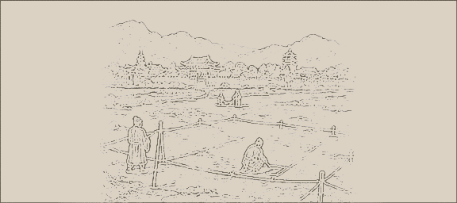
서안 대자은사 안의 벽돌탑. 인도에서 열일곱 해 만에 돌아온 현장 법사가 가져온 경전과 불상을 지키려고 당 고종 때 세웠다. 과거에 붙은 젊은이들이 이 탑 아래에 이름을 적는 「안탑제명」이 당나라 선비들의 큰 자랑이었다.
GIF 열기 · dayanta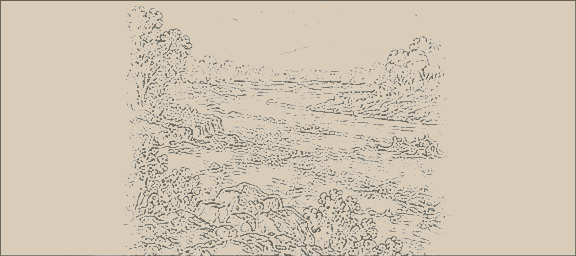
하북 조주의 효하를 건너는 돌다리. 수나라 장인 이춘이 놓았다. 큰 아치 하나로 강을 건너고 양쪽 어깨에 작은 아치를 둘씩 더 뚫어, 돌 무게를 덜고 큰물이 지날 길을 냈다. 천 년 넘게 홍수와 지진을 견뎌 「조주교는 신선 노반이 하룻밤에 놓았다」는 노래가 전한다.
GIF 열기 · anjiqiao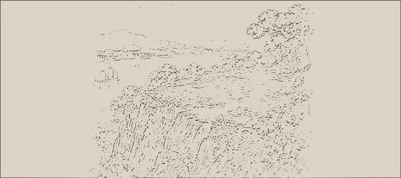
무창 뱀산 벼랑 위, 장강을 내려다보는 누각. 신선이 누런 학을 타고 날아갔다는 이야기가 깃들었다. 당나라 최호가 「옛사람은 황학을 타고 떠났고 이곳엔 빈 누각만 남았네」라 읊자, 뒤에 온 이백조차 붓을 놓았다고 한다. 여러 번 불타고 다시 세워졌다.
GIF 열기 · huanghelou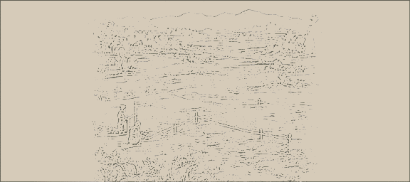
공자가 태어난 노나라 곡부에, 그가 세상을 떠난 이듬해 옛집을 사당으로 삼은 데서 시작한 사당. 왕조마다 넓혀 지어 노란 기와 전각이 아홉 겹 뜰을 이룬다. 용이 감긴 돌기둥의 대성전 앞에는 공자가 제자를 가르쳤다는 살구나무 단이 있고, 북쪽 숲에는 공자 집안 대대의 무덤이 이어진다.
GIF 열기 · qufu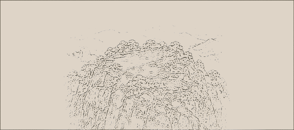
호북 북서쪽 무당산은 도교의 북방 신 진무대제가 수련한 산이라 한다. 명나라 영락제가 군사와 장인 수십만을 보내 산 전체에 도관 서른 남짓을 지었고, 꼭대기 천주봉에는 구리를 부어 금칠한 전각 「금전」을 올렸다. 도사들이 익히는 부드러운 권법은 장삼봉이 학과 뱀의 싸움을 보고 지었다고 전한다.
GIF 열기 · wudang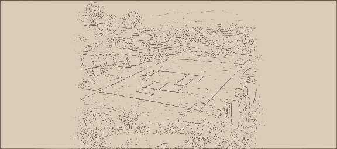
데칸 고원의 현무암 벼랑에 서른넷 굴 사원이 늘어서 있다. 불교·힌두·자이나교 사원이 나란히 있고, 그 가운데 카일라사 사원은 벼랑을 위에서부터 파 내려가 통바위 하나를 깎아 만든 거대한 사원이다. 코끼리와 신들의 조각이 실물처럼 서 있지만, 쌓아 올린 돌은 하나도 없다.
GIF 열기 · ellora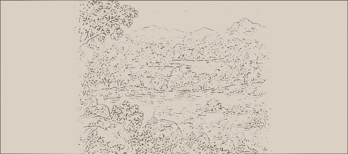
분델칸드 숲속, 찬델라 왕들이 세운 사원 수십 채. 산봉우리처럼 겹겹이 솟은 지붕 아래 바깥벽이 춤추는 천녀와 악사, 신과 연인의 조각으로 빈틈없이 덮였다. 이븐 바투타는 이 호숫가에서 머리를 길게 기른 수행자들을 보았다고 적었다.
GIF 열기 · khajuraho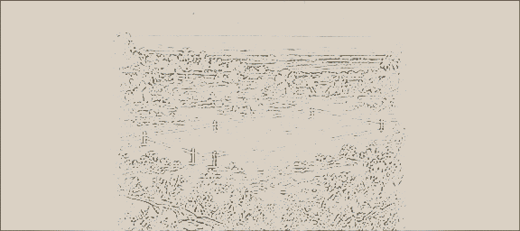
벵골만 바닷가, 태양신 수리야가 타고 다니는 수레를 돌로 만든 사원. 돌 바퀴 스물네 개가 기단에 새겨져 있고, 일곱 마리 말이 그 수레를 끈다. 바퀴살 그림자로 시각을 읽을 수 있다고 한다. 바다에서도 높은 탑이 보여, 뱃사람들은 「검은 탑」이라 부르며 길잡이로 삼았다.
GIF 열기 · konark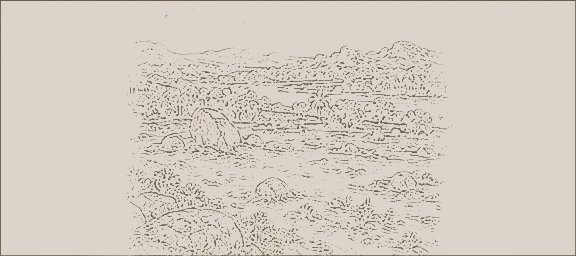
비자야나가르 퉁가바드라 강가, 비슈누를 모신 사원. 뜰에는 가루다를 모신 돌 수레가 서 있는데, 돌 바퀴가 금방이라도 굴러갈 듯하다. 큰 회랑의 가는 돌기둥들은 손가락으로 두드리면 저마다 다른 음을 내서 「노래하는 기둥」이라 부른다. 포르투갈 사람 파이스는 이 도시가 로마만큼 크다고 적었다.
GIF 열기 · vittala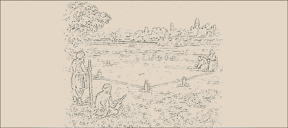
라호르 동쪽 암리차르, 「불사의 감로 연못」 한가운데 세운 시크교의 사원. 다섯째 구루 아르잔이 1604년에 경전 『아디 그란트』를 처음 모셨다. 누구나 들어오라는 뜻으로 사방에 문을 내었고, 사원 부엌 「랑가르」에서는 신분을 가리지 않고 바닥에 나란히 앉아 같은 밥을 먹는다.
GIF 열기 · harmandir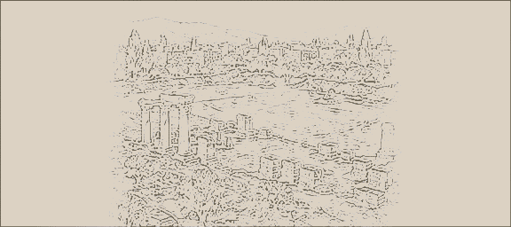
다마스쿠스 한가운데, 옛 로마 신전과 세례 요한 교회 자리에 칼리파 왈리드 1세가 지은 큰 모스크. 뜰을 두른 벽은 금빛 유리 모자이크로 강과 나무와 궁전이 가득한 낙원을 그렸다. 기도실 안에는 세례 요한의 머리를 모신 사당이 있어, 무슬림과 그리스도교도가 함께 찾는다.
GIF 열기 · umayyad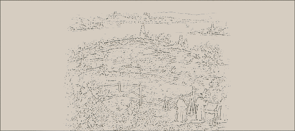
정복자 메흐메트 2세가 콘스탄티노플을 얻은 뒤 보스포루스와 금각만이 내려다보이는 곶에 지은 술탄의 궁전. 문을 하나 지날 때마다 뜰이 한 겹씩 깊어지고, 맨 안쪽 하렘과 보물 창고에는 아무나 들어갈 수 없다. 궁전 부엌의 굴뚝들이 줄지어 서서 하루에 수천 명의 밥을 짓는다.
GIF 열기 · topkapi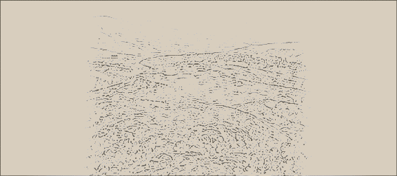
시리아 홈스 고개를 내려다보는 언덕 위, 구호기사단이 넓히고 고쳐 쌓은 십자군의 성. 두 겹 성벽 사이에 해자와 가파른 돌 비탈을 두어 백 년 넘게 함락되지 않았다. 1271년 맘루크의 술탄 바이바르스가 거짓 편지로 기사들을 내보내 마침내 차지했다고 전한다.
GIF 열기 · krak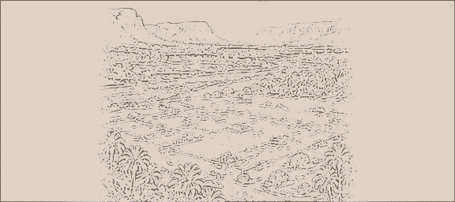
하드라마우트 골짜기 한가운데, 흙벽돌로 쌓은 집 오백 채가 성벽 안에 빽빽이 솟은 도시. 집마다 대여섯 층이 넘어 하늘에 닿을 듯한 탑처럼 보인다. 홍수와 약탈을 피해 위로 쌓아 올렸고, 지붕과 지붕 사이에 다리를 걸쳐 오간다. 큰물이 지나간 뒤에는 흙을 이겨 벽을 새로 바른다.
GIF 열기 · shibam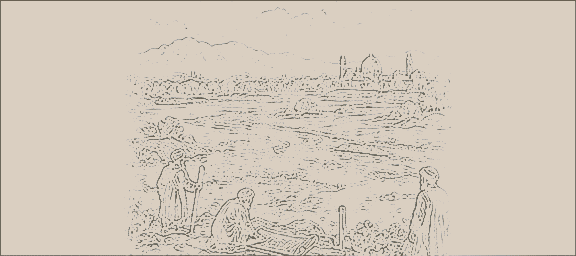
이스파한의 자얀데 강을 건너는 두 층 돌다리. 샤 아바스 1세의 장군 알라베르디 칸이 지었고, 아치 서른셋이 줄지어 있다. 위층 회랑은 사람이 걷고 아래층 아치 사이로 강물이 흐른다. 이스파한의 아르메니아 사람들은 해마다 이 다리 아래에서 서로 물을 뿌리는 축제를 연다.
GIF 열기 · siosepol구릉의 소 우리를 둘러싼 마을에서, 젊은이 무리가 소가죽 방패를 든 채 다리를 머리 높이까지 차올렸다가 땅을 내리찍는 「인들라무」 춤을 춘다. 한 사람이 노래를 메기면 모두가 받는 소리가 언덕을 울린다. 잔치에는 수수로 빚은 걸쭉한 맥주와 구운 쇠고기가 빠지지 않는다. 소년들은 긴 막대와 짧은 막대로 치고 막는 막대 싸움으로 몸을 단련한다.
GIF 열기 · folk_zulu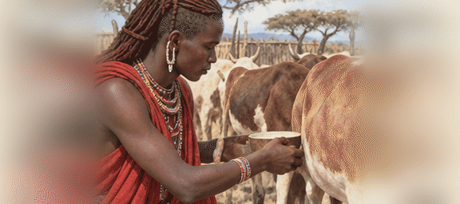
붉은 천을 두른 젊은 전사들이 둥글게 서서 목 깊은 데서 끊어 내는 소리로 장단을 넣고, 한 사람씩 앞으로 나와 무릎을 굽히지 않고 하늘로 곧게 뛰어오른다. 높이 뛸수록 칭찬을 받는다. 소의 젖에 소의 피를 섞어 마시고, 잔치 때만 고기를 굽는다. 사자를 창으로 잡아야 어른 전사가 되었다는 이야기가 전한다.
GIF 열기 · folk_maasai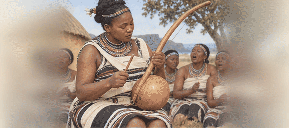
코사 여인들은 한 사람이 목에서 두 음을 한꺼번에 내는 노래를 부른다. 박 울림통을 단 활 「우하디」를 막대로 두드리며 그 소리를 겹친다. 춤꾼은 어깨와 가슴을 빠르게 떨어 장단을 탄다. 남자들은 막대 두 개로 맞서는 막대 싸움으로 겨루고, 잔치에는 수수를 빻아 콩과 끓인 죽과 수수 맥주가 나온다. 혀 차는 소리가 섞인 말 자체가 노래처럼 들린다.
GIF 열기 · folk_xhosa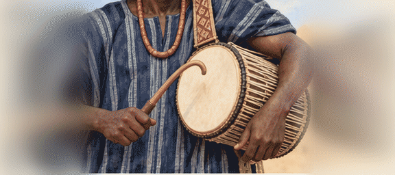
오요 장터에서는 겨드랑이에 낀 북 「두두」가 사람 말처럼 높낮이를 바꾸며 운다. 요루바 말은 소리의 높낮이로 뜻이 갈려서, 북잡이가 장단으로 임금의 이름과 칭송을 그대로 「말한다」. 온몸을 천으로 덮은 조상 넋 「에궁군」이 천을 펄럭이며 거리를 돌고, 사람들은 얌을 찧은 떡에 진한 국을 곁들여 먹는다. 말 탄 군사들의 창 솜씨도 이름났다.
GIF 열기 · folk_yoruba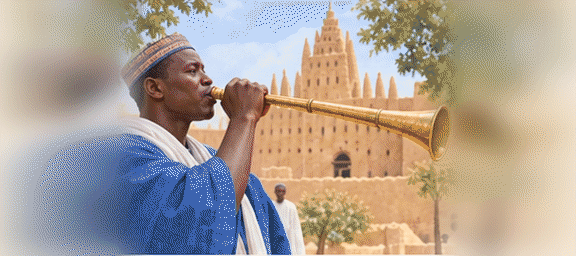
카치나의 임금이 행차하면 긴 쇠 나팔 「카카키」가 울려 길을 연다. 장터에서는 칭송 노래꾼이 겨드랑이 북 「칼랑구」를 치며 사람들을 불러 모은다. 젊은이들은 한 손을 천으로 감아 주먹 삼고 다른 손을 방패 삼는 권투 「담베」를 북장단에 맞춰 겨룬다. 수수 떡 「투오」에 바오밥 잎 국을 곁들인다.
GIF 열기 · folk_hausa소를 몰고 사헬을 떠도는 풀라니 사람들이 철 따라 모이는 날, 어떤 무리의 젊은 남자들은 얼굴을 칠하고 눈을 크게 뜨며 이를 드러내 웃는 「게레올」 춤으로 아름다움을 겨룬다. 대나무 피리와 외줄 바이올린 소리가 울리고, 기장 경단에 삭힌 우유를 부어 먹는다. 소년들은 회초리를 맞고도 웃어 보이는 「샤로」로 사내다움을 증명한다.
GIF 열기 · folk_fulani아틀라스 산골 성채 마을의 저녁, 남녀가 어깨를 맞대고 줄지어 서서 노래를 주고받는 「아화쉬」가 벌어진다. 가운데에서 큰 틀북 「반디르」를 치면 줄 전체가 몸을 앞뒤로 흔든다. 흙솥 타진에 양고기와 말린 과일을 뭉근히 찌고, 잔치에는 쿠스쿠스를 산처럼 담는다. 말 탄 사내들이 줄지어 달리다 한꺼번에 총을 쏘는 기마 놀이도 있다.
GIF 열기 · folk_amazigh칼라하리의 밤, 여인들이 모닥불 둘레에 앉아 손뼉으로 복잡한 장단을 치며 노래하고, 남자들은 발목에 누에고치 방울을 차고 불 둘레를 돈다. 춤이 깊어지면 춤꾼이 넋을 잃고 쓰러지는데, 그때 병을 고치는 힘이 깃든다고 믿는다. 사냥꾼은 독화살을 쓰고, 땅속 덩이뿌리와 타조알 껍데기에 담은 물로 사막을 견딘다. 바위에는 이 춤을 추는 사람들이 그림으로 남아 있다.
GIF 열기 · folk_san사막 천막에서 여인들이 외줄 바이올린 「임자드」를 켜며 노래를 지으면, 푸른 천으로 얼굴을 가린 남자들이 낙타를 타고 모여든다. 절구에 가죽을 씌운 북 「텐데」를 두드리면 낙타 탄 사내들이 장단에 맞춰 원을 돈다. 모래 속 숯불에 묻어 구운 빵 「타겔라」를 낙타 젖과 함께 먹는다. 남자들은 곧은 칼 「타코바」와 영양 가죽 방패를 지닌다.
GIF 열기 · folk_tuareg가다 모임의 날, 큰 무화과나무 아래에 모여 법을 정하고 나면 노래와 춤이 이어진다. 남자들은 어깨와 머리를 빠르게 흔드는 춤을 추고, 여인들은 목소리를 높게 떨며 환호한다. 커피 열매를 버터에 볶아 귀한 손님에게 대접하고, 꿀술을 돌린다. 말을 달리며 막대 창을 던지고 피하는 겨루기로 젊은이들이 솜씨를 겨룬다.
GIF 열기 · folk_oromo숲속 마을에서 큰 북 「아톰팡」 한 쌍이 남녀 목소리처럼 높고 낮게 울려 조상과 임금의 이름을 부른다. 춤꾼은 손짓 발짓 하나하나로 뜻을 전하는 「아도와」를 추고, 상아 나팔이 임금의 행차를 알린다. 플랜틴과 얌을 찧은 떡에 야자 기름 국을 곁들여 먹는다. 금 무게를 다는 작은 놋쇠 추에는 속담이 그림으로 새겨져 있다.
GIF 열기 · folk_akan호숫가 마을에서 큰 북 하나를 여럿이 둘러앉아 함께 치며 높은 소리로 노래한다. 사냥을 앞두면 들소의 몸짓을 흉내 내는 춤을 추고, 넋이 깃든 담뱃대를 돌려 피운다. 젊은이는 삼나무 피리로 연인에게 마음을 전한다. 가을이면 카누를 타고 호수의 야생 벼를 막대로 털어 거둔다.
GIF 열기 · folk_dakota키투와 마을 한가운데 일곱 모서리의 회의당이 있고, 그 앞 광장에서 밤새 「스톰프 춤」을 춘다. 여인들이 발목에 거북 등딱지 방울을 차고 발을 구르면, 남자 앞소리꾼이 노래를 메기고 줄이 받는다. 옥수수·콩·호박 세 자매를 한 밭에 기르고, 옥수수를 잿물에 불려 죽을 쑨다. 마을끼리의 다툼은 「전쟁의 작은 형제」라 부르는 막대 공놀이로 풀기도 했다.
GIF 열기 · folk_cherokee다섯 부족이 「큰 평화의 법」으로 묶인 동맹의 불씨가 오논다가에 있다. 긴 나무껍질 집 안에서 물북과 거북 딸랑이로 장단을 치며 「물고기 춤」, 「곰 춤」 같은 사교 춤을 춘다. 한겨울 새해 잔치에는 나무 가면을 쓴 무리가 집집을 돌며 병을 쫓는다. 옥수수 떡과 사슴 고기 국을 먹고, 남자들은 막대 공놀이로 창조주를 기쁘게 한다.
GIF 열기 · folk_haudenosaunee오소사네의 긴 집 마을. 웬다트 사람들은 큰 병이 나면 꿈에서 본 춤과 잔치를 마을 사람 모두가 차려 주어야 낫는다고 믿었다. 열 해 남짓마다 죽은 이들의 뼈를 한데 모아 묻는 「넋의 잔치」에는 이웃 마을까지 모여 노래하고 선물을 나눈다. 옥수수로 죽을 쑤고, 담배와 옥수수를 이웃 부족과 바꾸는 장사꾼으로 이름났다.
GIF 열기 · folk_wendat호셸라가와 스타다코나의 옥수수밭 마을. 1535년 카르티에가 왔을 때 사람들은 강가에서 손뼉을 치며 노래하고 둥글게 돌며 춤으로 맞았다. 겨울에는 흰 삼나무 잎을 달인 물로 괴혈병을 고쳤고, 이를 배운 프랑스 선원들이 목숨을 건졌다. 옥수수빵에 말린 콩과 훈제 장어를 곁들여 먹는다.
GIF 열기 · folk_stlawrence워로워코모코의 큰 추장 앞에서, 손님이 오면 몸에 칠을 한 여인들이 둥글게 돌며 소리치는 춤으로 맞았다. 1607년 존 스미스가 그 춤을 보고 적었다. 사람들은 옥수수빵과 굴, 사슴 고기를 먹고, 강에 둑을 놓아 물고기를 가둔다. 싸움에 나설 때는 따로 부르는 노래가 있었다.
GIF 열기 · folk_powhatan소왐스는 큰 추장 마사소이트의 마을. 옥수수가 처음 익으면 「푸른 옥수수 잔치」를 열고 북과 노래로 감사의 춤을 춘다. 바닷가 사람들이라 대합과 바닷가재를 해초에 덮어 달군 돌 위에서 쪄 먹는다. 여름 모래밭에서는 마을과 마을이 수백 명씩 나와 공차기를 겨룬다.
GIF 열기 · folk_wampanoag쿠사의 흙 언덕 위 광장에서, 여름 옥수수가 익으면 묵은 잘못을 씻고 새 불을 피우는 「부스크」 잔치가 열린다. 남자들은 쓴 「검은 음료」를 마시고, 거북 등딱지 방울을 찬 여인들과 함께 밤새 춤을 춘다. 사내들은 굴러가는 돌 원반에 창을 던지는 「청키」로 내기를 한다. 1540년 데 소토가 이 마을에 왔다.
GIF 열기 · folk_muscogee「위대한 태양」이라 불리는 임금이 흙 언덕 위 집에 살고, 맞은편 언덕 신전에서는 꺼지지 않는 불을 지킨다. 임금은 땅을 밟지 않고 가마로 다닌다. 해마다 열세 달마다 잔치를 열어 그달에 거둔 것을 바치며 노래하고 춤춘다. 옥수수와 호박, 강의 메기를 먹는다.
GIF 열기 · folk_natchez플로리다 남서쪽 물길에 조개껍데기를 쌓아 섬을 만들고 사는 바다의 사람들. 농사 없이 물고기와 조개만으로 큰 나라를 이루었다. 축제 날이면 칠한 나무 가면을 쓰고 노래하며 마을 사이를 줄지어 걷는다. 통나무배 둘을 묶어 바다를 건너고, 1521년에는 폰세 데 레온이 이들의 화살에 맞아 물러났다.
GIF 열기 · folk_calusa눈 덮인 산 아래 흙벽돌로 다섯 층을 쌓은 큰 집에 사는 티와 사람들. 겨울에는 사슴 가죽을 쓰고 사슴 몸짓을 흉내 내는 「사슴 춤」을 추고, 속을 판 통나무 북을 여럿이 치며 낮게 노래한다. 옥수수와 고추를 처마에 걸어 말린다. 해마다 해의 길을 따라 젊은이들이 이어 달리는 경주를 한다.
GIF 열기 · folk_taos높이 솟은 바위 언덕 꼭대기, 바위에 계단을 깎아 올라가야 하는 「하늘 도시」. 넋의 가면을 쓴 춤꾼들이 비를 부르며 광장에서 춤추고, 사람들은 지붕에 올라 구경한다. 얇은 흙그릇에 검은 선으로 번개와 새를 그리는 솜씨가 빼어나다. 옥수수를 맷돌에 가는 여인들의 노래가 아침마다 바위 위에 울린다.
GIF 열기 · folk_acoma미주리 강가 흙집 마을. 여름이면 「오키파」라는 나흘 잔치가 열려 들소 가죽을 쓴 남자들이 들소 떼를 부르는 「들소 춤」을 춘다. 거북 모양 가죽 북을 치고, 젊은이들은 고행을 견뎌 어른이 된다. 여인들은 옥수수와 해바라기를 기르고, 둥근 가죽배로 강을 건넌다. 이웃 부족이 옥수수를 사러 모여드는 큰 장터였다.
GIF 열기 · folk_mandan바닷가 마을 사람들이 판자를 꿰매고 역청을 발라 만든 배 「토몰」로 먼 섬까지 오간다. 해를 부르는 겨울 잔치에는 황새치 머리뼈를 쓴 춤꾼이 바다의 넋을 기리며 돌고, 사슴 다리뼈 피리와 쪼갠 나무 딸랑이가 장단을 맞춘다. 도토리를 빻아 물에 우려 죽을 쑤고, 조개 구슬을 돈으로 쓴다. 동굴 천장에는 해와 별을 색색으로 그렸다.
GIF 열기 · folk_chumash서쪽 끝 곶의 고래잡이 마을. 삼나무 통배를 타고 나가 작살로 고래를 잡기 전에, 사냥꾼들은 몇 달 동안 몸을 씻고 노래로 넋을 맑힌다. 큰 잔치 「포틀래치」에서는 집안마다 물려받은 노래와 춤을 선보이고 손님에게 선물을 나눈다. 늑대 가면을 쓴 춤꾼, 고래 기름에 찍어 먹는 마른 연어가 잔치를 채운다.
GIF 열기 · folk_makah순록 떼를 몰고 북쪽 끝 툰드라를 옮겨 다니는 사람들. 사람이나 땅, 순록을 노래하는 「요이크」는 무엇에 대한 노래가 아니라 그것 자체를 부르는 노래라 한다. 무당 「노아이디」는 그림을 그린 북을 두드려 넋을 다른 세상으로 보낸다. 순록 고기를 말리고 훈제하며, 젖을 굳혀 치즈를 만든다. 스키를 타고 순록을 쫓는 솜씨는 바이킹도 감탄했다.
GIF 열기 · folk_sami에조 섬의 숲과 바닷가에 사는 사람들. 대나무 조각을 입에 대고 줄을 당겨 튕기는 「무쿠리」 소리가 바람처럼 떤다. 여인들은 둘러앉아 칠기 뚜껑을 두드리며 돌림노래 「우포포」를 부르고, 학이 날개를 펴는 몸짓으로 춤춘다. 겨울에 곰 새끼를 길러 신의 나라로 돌려보내는 큰 잔치를 연다. 연어와 사슴 고기를 넣은 국을 끓인다.
GIF 열기 · folk_ainu남방대륙 남동쪽 큰 섬들의 사람들. 손님이 오면 전사가 혀를 내밀고 눈을 부릅뜨며 땅을 구르는 「하카」로 맞아 힘을 보이고, 여인들은 줄 끝에 단 공 「포이」를 돌리며 노래한다. 땅을 파 달군 돌 위에 고기와 고구마를 쪄 먹는다. 짧은 녹옥 몽둥이와 긴 막대 창을 다루는 무술이 엄하게 전해진다. 1642년 타스만의 배가 이 사람들의 통배에 쫓겨 물러났다.
GIF 열기 · folk_maori아시아 동쪽 끝 얼어붙은 반도의 사람들. 순록을 치는 무리와 바다짐승을 잡는 무리로 나뉜다. 바다코끼리 위장을 씌운 둥근 북을 가는 막대로 두드리며 노래하고, 여인들은 목구멍으로 숨을 들이쉬고 내쉬며 소리를 주고받는 놀이 노래를 한다. 사내들은 씨름과 순록 썰매 경주, 오래 달리기로 힘을 겨룬다. 순록 고기와 바다표범 기름을 먹는다.
GIF 열기 · folk_chukchi사얀산맥 사이 초원의 목동들. 한 사람이 목에서 낮은 소리를 내며 그 위에 휘파람 같은 높은 소리를 함께 얹는 「후메이」를 부른다. 바람과 시냇물, 말 달리는 소리를 흉내 낸다고 한다. 말머리 장식을 단 두 줄 현악기를 켜고, 무당은 북을 쳐 넋을 부른다. 양을 잡아 피 순대와 젖술을 나누고, 씨름에서 이긴 장사는 독수리처럼 두 팔을 펴고 춤춘다.
GIF 열기 · folk_tuva술루 바다와 셀레베스 바다를 집배 위에서 떠도는 사람들. 배에서 나고 자라, 숨 한 번에 깊은 바다 밑까지 내려가 작살로 물고기를 잡는다. 잔치 날이면 놋쇠 징 여러 개를 줄지어 놓고 치는 가락에 맞춰, 여인들이 긴 손톱 장식을 끼고 손목을 꺾는 「이갈」 춤을 춘다. 말린 물고기와 해삼, 사고 야자 떡을 먹는다.
GIF 열기 · folk_bajau콩고 이투리 숲 깊은 곳의 키 작은 사냥꾼들. 목소리 여러 갈래를 엇갈려 겹치는 노래로 숲을 깨운다 — 숲은 사람을 돌보는 어머니라서, 일이 잘 안 풀리면 숲이 잠들었다고 여기고 「몰리모」 나팔을 밤새 불어 깨운다. 꿀 철이면 나무에 올라 꿀을 따며 노래한다. 그물을 둘러치고 소리쳐 몰아 영양을 잡는다. 옛 이집트 임금도 춤추는 숲사람을 데려오라 했다는 이야기가 있다.
GIF 열기 · folk_mbuti바다 한가운데 화산섬들의 사람들. 이야기와 집안의 계보를 몸짓으로 풀어내는 「훌라」를 북과 박 장단에 맞춰 춘다 — 춤 하나하나가 신과 조상에게 바치는 노래다. 땅을 파 달군 돌 위에 돼지와 토란을 쪄서, 토란을 찧은 떡을 손가락으로 찍어 먹는다. 뼈를 꺾고 넘어뜨리는 맨손 무술을 익힌 전사들이 추장을 지키고, 파도 위를 판자로 타는 놀이는 추장들의 자랑이다.
GIF 열기 · folk_hawaii벵골만 한가운데 숲 우거진 섬들의 사람들. 바깥 사람이 다가오면 활을 겨누어 돌려보내므로, 마르코 폴로 이래 뱃사람들은 무서운 소문만 전했다. 그러나 섬 안에서는 둥근 마을 한가운데 춤판을 두고, 발로 구르는 나무 울림판을 북 삼아 밤새 노래하고 춤춘다. 바다거북과 멧돼지, 숲 꿀을 먹고, 몸에 흰 흙으로 무늬를 그린다.
GIF 열기 · folk_andaman세상 끝 불의 땅의 사람들. 마젤란이 해협을 지날 때 밤마다 뭍에 그들의 모닥불이 보여 「불의 땅」이라 이름 지었다. 젊은이가 어른이 되는 「하인」 의식에서는 사내들이 온몸을 흰빛과 붉은빛으로 칠하고 넋의 탈을 써 하늘과 땅의 넋을 춤으로 보여 준다. 과나코 가죽을 걸치고 그 고기를 구워 먹으며, 활쏘기와 씨름으로 솜씨를 겨룬다.
GIF 열기 · folk_selknam